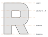
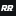
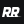
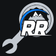
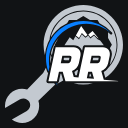
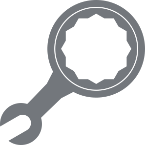
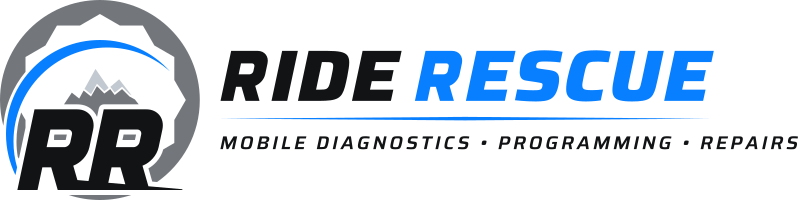
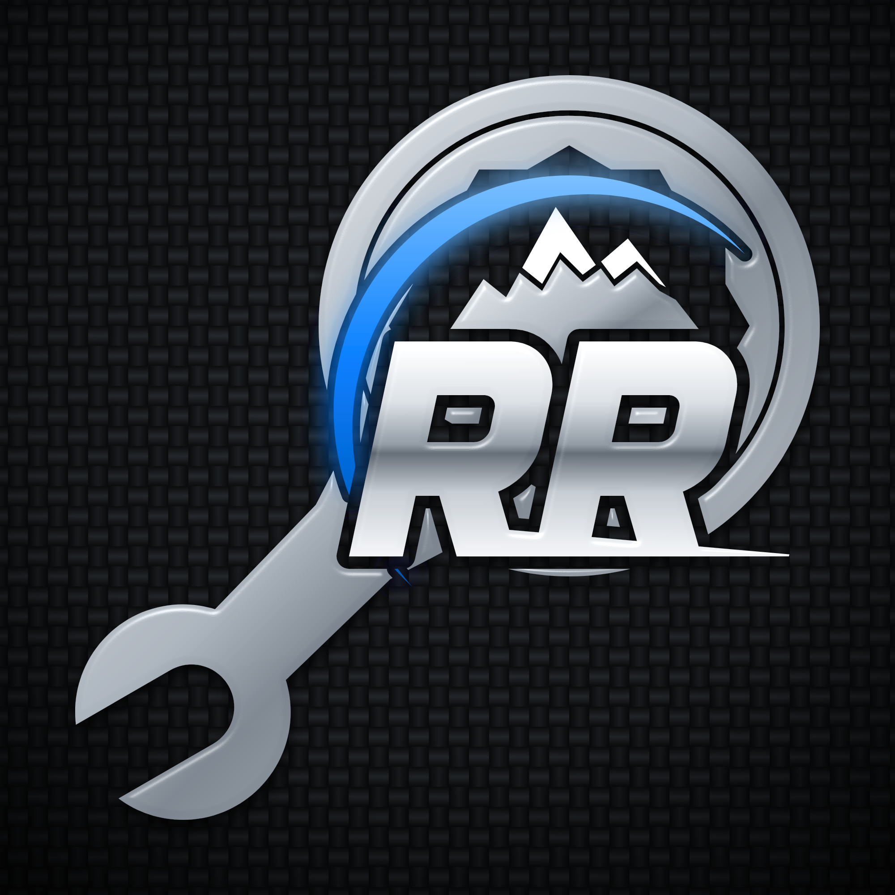

Ride Rescue · Identity v2 · Construction, size and misuse
The R is drawn upright from rounded-square parts on a 64-unit grid with a 16-unit stroke, the system unit X, then slanted 12°, Saira Italic's own angle. The first R's leg runs on as a road line under the second R and out past it. Clear space around every lockup is 1X measured at the RR's size; around the micro mark it is 2X.


16
24
96
128| Asset | Digital min | Print min | Below that, use |
|---|---|---|---|
| Micro mark (RR) | 16 px | 5 mm tall | — |
| Secondary (RR in wrench) | 64 px | 16 mm | Micro mark |
| Primary emblem (with peaks) | 96 px | 25 mm | Secondary |
| Stacked lockup | 200 px wide | 50 mm wide | Secondary + wordmark |
| Horizontal lockup | 280 px wide | 70 mm wide | Compact horizontal |
| Compact horizontal | 180 px wide | 45 mm wide | Micro mark |

✕ Wrench without the RR
✕ Stretched
✕ Chrome version in one-colour useBook your diagnostic session today and we will confirm a time.
✕ Electric Blue body text on white